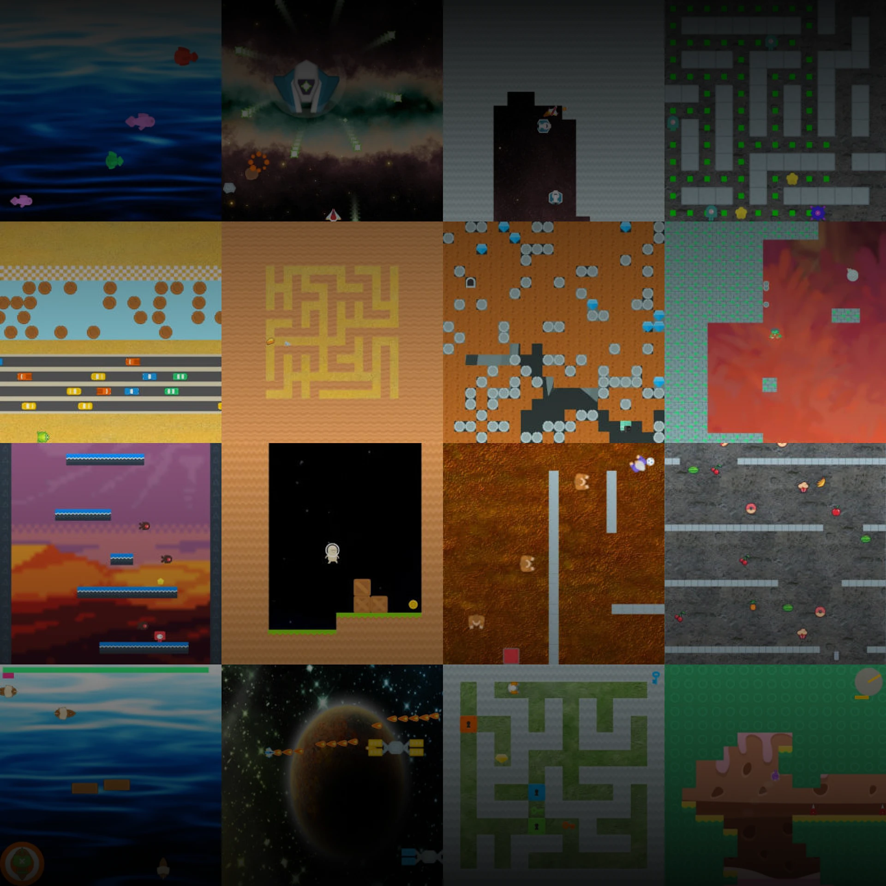
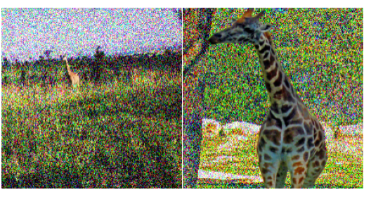
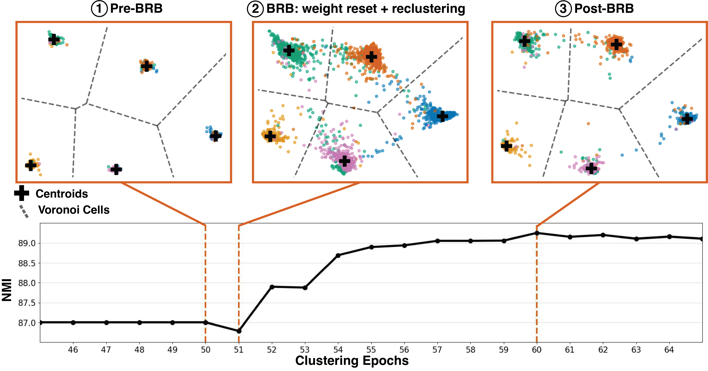
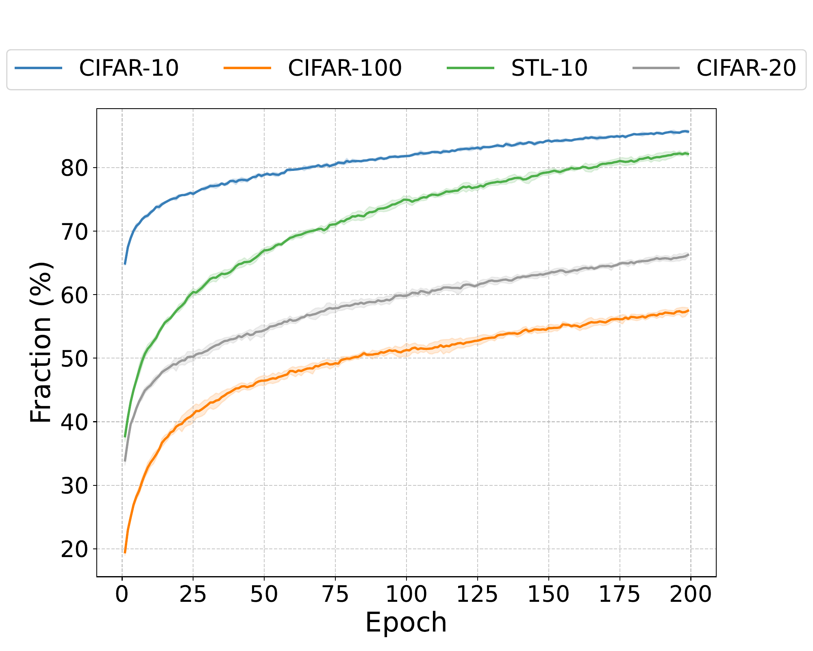
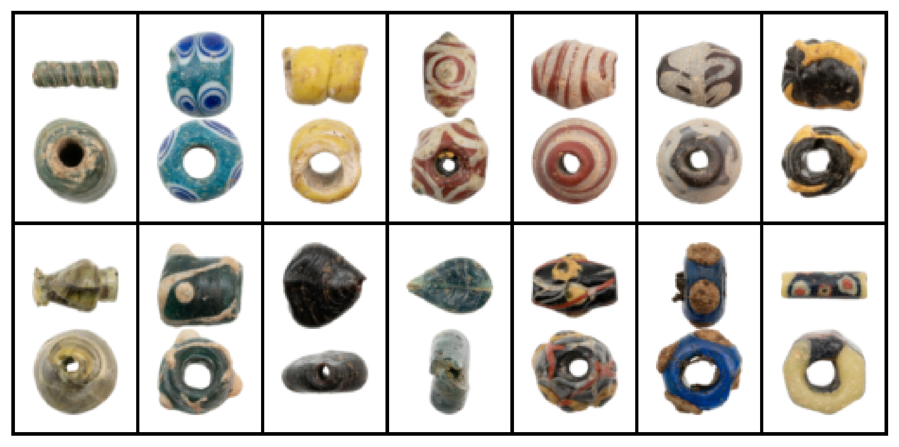

Understanding how deep networks structure information in their embedding spaces, and learning representations that are useful for downstream tasks.
Building models whose decisions do not rely on sensitive attributes, with formal notions of fairness backed by theoretical guarantees.
Studying how and why neural networks fail under small perturbations, and developing principled ways to make them more resilient.
Making powerful models reliable and aligned with human intent, with an interest in unlearning, deception detection, and interpretability.
* denotes equal contribution





I am always open to collaboration and happy to chat about research ideas. If you're working on something related or just want to connect, feel free to reach out!